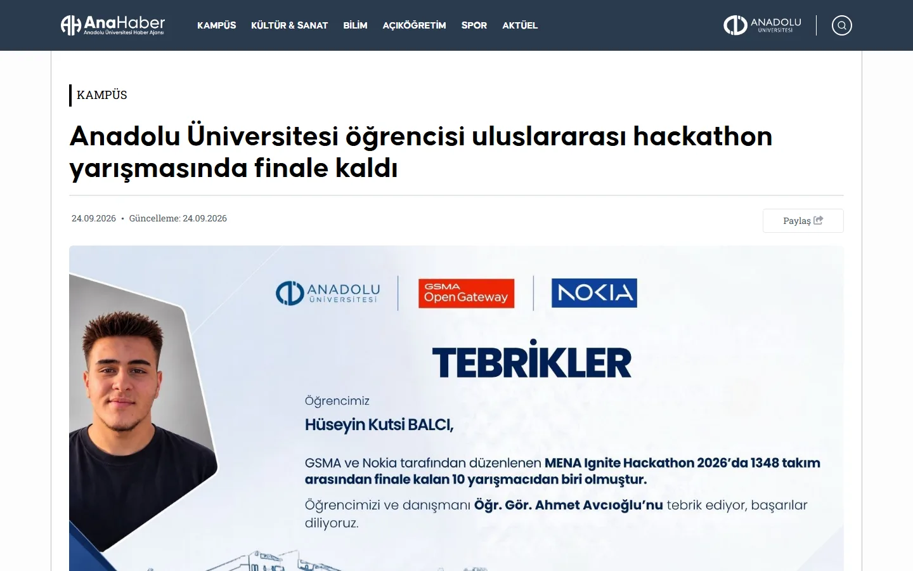
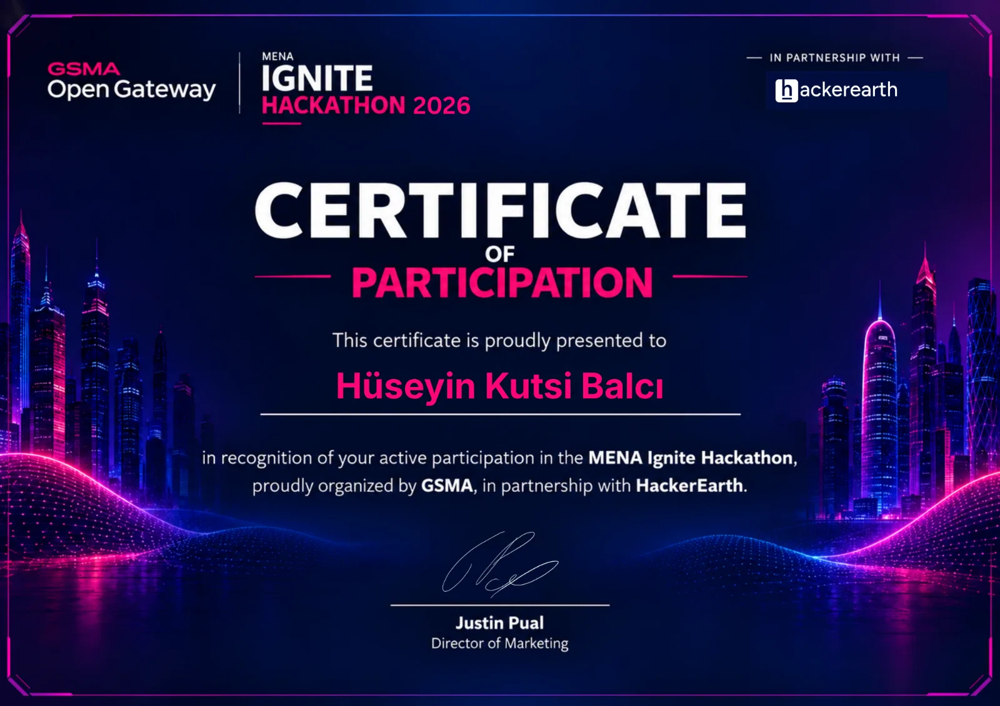

TOP 10out of 1,348 teams
GSMA MENA Ignite 2026
GSMA MENA Ignite 2026



Top 10 · 1,348 teamsGSMA MENA Ignite 2026
HeatShield
An AI agent that uses the mobile network as its sensor to protect construction workers from heat stress.
In Qatar, outdoor work must stop once heat passes the legal limit. HeatShield detects workers still on site through the network, with no extra device, spends its query budget on the workers most at risk first, and writes every decision to a record that can be used in an inspection. I built it on my own in two and a half weeks and presented it live to an international jury.
800 → 89network queries on a 240-worker site
6 APIstested live on Nokia Network as Code
130automated tests that run offline
- Python
- FastAPI
- CAMARA
- Nokia NaC